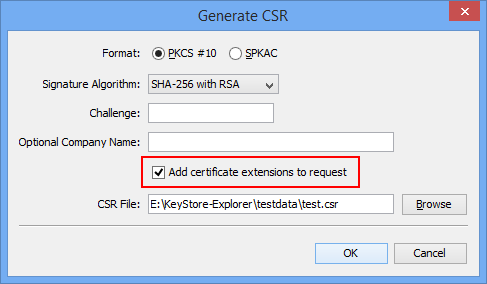

Added Support for ECC (Elliptic Curve Cryptography)
Java 7 introduced the SunEC provider for Elliptic Curve algorithms which allows keytool and jarsigner to create and use EC keys in JKS and JCEKS keystores. Third party JCE providers like Bouncy Castle have been supporting ECC in their keystore types (BKS, UBER) for some time now.
Elliptic curves are defined by a number of domain parameters. Because it is difficult to find "good" domain parameters, several organizations (e.g. NIST, SECG, ANSI, ECC Brainpool) have published domain parameters of elliptic curves for several common field sizes. These "named curves" can be referenced by name or OID.
EC key sizes are generally smaller than comparable RSA key sizes. The name usually contains the key size, e.g. "sect571k1" (571 bits) or "B-409" (409 bits).
In KSE EC key generation is done by selecting a named curve:

Which named curves are available in KSE depends on two factors: Java version and keystore type.
The following table gives an overview on the available curves:
| Curve Set |
Java 6 (JKS, JCEKS, P12) |
Java 7+ (JKS, JCEKS, P12) |
Java 6+ (BKS, UBER) |
| ANSI |
0 |
15 |
15 |
| SEC |
0 |
33 |
33 |
| NIST |
0 |
15 |
15 |
| Brainpool |
0 |
0 |
14 |
Added Support for Certificate Extensions and unstructuredName Attribute in PKCS#10 CSRs
Some CAs support certificate requests (CSRs) that contain X.509 extensions (for example and especially SubjectAlternativeName).
With KSE 5.1 you can create such CSRs. All you have to do is to create a new key pair, add the extensions and when exporting the CSR click the check box "Add certificate extensions to request".

When examining CSRs in KSE it is now also possible to view the extensions.
Another addition to PKCS#10 requests is the unstructuredName attribute (see http://www.ietf.org/rfc/rfc2985.txt). In
OpenSSL this is called "An optional company name" when generating requests, so KSE uses the same phrase.
Please enter the following 'extra' attributes
to be sent with your certificate request
A challenge password []:
An optional company name []: